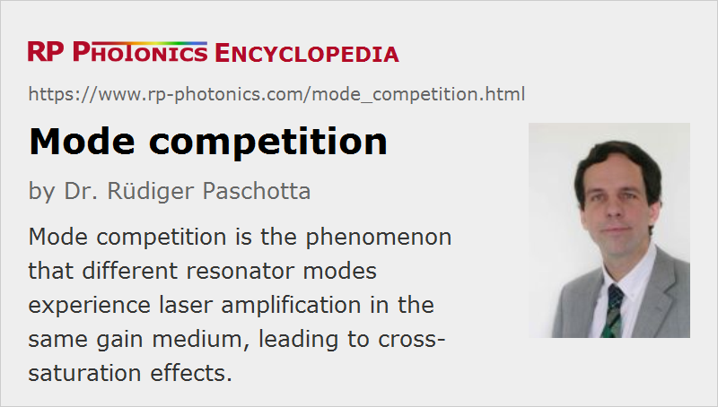

Mode Competition
Definition: the phenomenon that different resonator modes experience laser amplification in the same gain medium, leading to cross-saturation effects
German: Modenkonkurrenz
Categories: optical resonators, lasers, physical foundations
How to cite the article; suggest additional literature
Author: Dr. Rüdiger Paschotta
A frequently used (and very valuable) concept is to describe the light circulating in an optical resonator in terms of resonator modes. The light in each mode can then be characterized with few parameters, e.g. electric field amplitude (or total power) and optical phase, apart from optical frequency and polarization. When only a few modes participate e.g. in the lasing process, the overall number of parameters is small, and various physical phenomena can be described on that simple basis.
The modes of a laser resonator all experience optical amplification in the same gain medium, e.g. a laser crystal, in which they spatially overlap to a significant extent. This leads to the phenomenon of mode competition or gain competition. Unfortunately, the terms are not precisely defined, and different meanings appear to be used in the literature:
- the fact that different modes experience amplification in the same gain medium, and that this leads to cross-saturation effects, where stimulated emission by one mode causes gain saturation not only for itself (self-saturation), but also for the other modes
- the phenomenon that the power distribution over several modes is unstable
Of course, the last-mentioned phenomenon can be a consequence of the former condition.
In the case of the former meaning of the term, mode competition can in principle be quantified: it is complete if the intensity distributions of the modes are identical, so that self- and cross-saturation are equally strong (assuming that the emission cross sections are also identical). Mode competition is then reduced if the overlap of the intensity distributions is incomplete. Two simple examples are:
- In a linear resonator, each resonator mode forms a standing-wave pattern in the gain medium, which differs for modes with different frequencies. Therefore, if one mode acquires a large power and strongly saturates its gain, another mode may see a reduced amount of gain saturation, as its standing-wave pattern has its anti-nodes at different positions (→ spatial hole burning).
- If a laser resonator contains a dispersive prism, modes with different optical frequencies may obtain a relative transverse offset in the gain medium.
In a situation with strong mode competition (in the sense of strong overlap of mode intensity distributions), which may occur, e.g., in a unidirectional ring laser, a single mode may be excited in the steady state (→ single-mode operation, single-frequency lasers): the mode with the highest net gain will saturate the gain so that it exactly balances its losses, and any other mode will then experience a negative net gain, which causes its power to fade away.
Situations with reduced mode competition can be more complicated: a strong lasing mode can not saturate the gain for the others to a level which prevents them from lasing. One then has a situation with complicated nonlinear dynamics, often dominated by cross-saturation effects, but possibly also influenced even by tiny mode coupling effects. Depending on various details, a stable distribution of optical power over several modes may occur, or (more frequently) an unstable power distribution, which causes additional laser noise.
The discussion has shown that strong mode overlap can lead to a stable situation. Depending on the definition of terms, this may be considered as a situation with strong mode competition (because of the strong overlap), or on the contrary as a situation with weak competition (as the situation is stable, not exhibiting explicit signs of competition).
Questions and Comments from Users
Here you can submit questions and comments. As far as they get accepted by the author, they will appear above this paragraph together with the author’s answer. The author will decide on acceptance based on certain criteria. Essentially, the issue must be of sufficiently broad interest.
Please do not enter personal data here; we would otherwise delete it soon. (See also our privacy declaration.) If you wish to receive personal feedback or consultancy from the author, please contact him e.g. via e-mail.
By submitting the information, you give your consent to the potential publication of your inputs on our website according to our rules. (If you later retract your consent, we will delete those inputs.) As your inputs are first reviewed by the author, they may be published with some delay.
See also: resonator modes, mode coupling, gain saturation, spatial hole burning, The Photonics Spotlight 2007-07-16
and other articles in the categories optical resonators, lasers, physical foundations
|  |
If you like this page, please share the link with your friends and colleagues, e.g. via social media:
These sharing buttons are implemented in a privacy-friendly way!